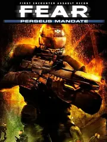

 |
|
| Tiempo de juego | 22s |
| Última actividad | 16/1/2026 12:01:59 |
| Añadido | 20/11/2025 20:35:49 |
| Modificado | 20/11/2025 20:52:55 |
| Estado de finalización | Jugado |
| Librería | Playnite |
| Fuente | |
| Plataforma | PC (Windows) |
| Fecha de lanzamiento | 6/11/2007 |
| Puntuación de la Comunidad | 73 |
| Puntuación de la Crítica | 70 |
| Puntuación de usuario | |
| Género | Shooter |
| Desarrollador | TimeGate Studios |
| Editor | Sierra Entertainment |
| Característica | Multiplayer Single Player |
| Enlaces | GOG |
| Tag | |
Perseus Mandate es una rareza, es lo que llamaríamos una "Side-Quest" gigante pero oficial. Lo más loco es que la historia transcurre al mismo tiempo que el primer juego. Mientras el Point Man y su equipo hacían desastres en una parte de la ciudad, vos estás en la otra punta lidiando con tu propio quilombo.
El gran giro es que aparece una tercera facción en el baile: los Nightcrawlers. Son mercenarios de élite súper equipados que buscan lo mismo que vos y te van a hacer la vida imposible. Ya no es solo pelear contra los clones Réplica; estos tipos saben lo que hacen y tienen tecnología de punta.
Y obvio, trajeron juguetes nuevos. Tenés un rifle avanzado con mira térmica que es una delicia para ver enemigos escondidos, un lanzagranadas para limpiar pasillos y un arma de rayos que... bueno, tenés que probarla vos mismo.
Es la pieza que faltaba para entender el panorama completo del incidente. Más acción, enemigos nuevos y esa Inteligencia Artificial que nos encanta.